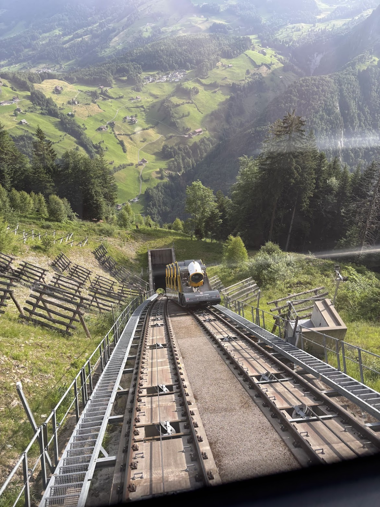
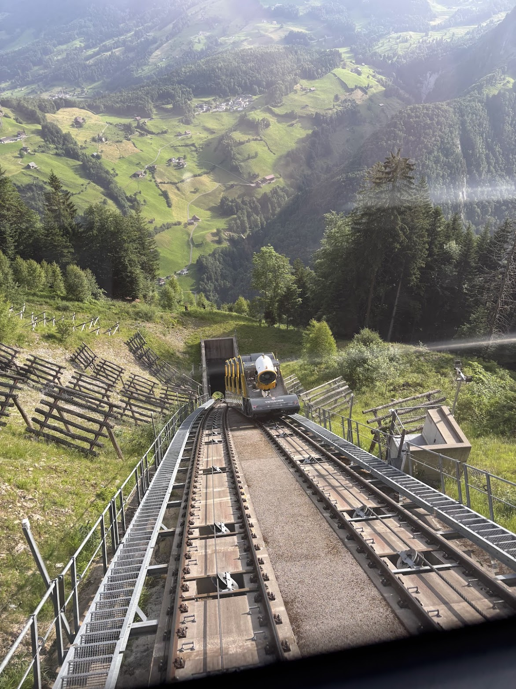

Why Switzerland?
Switzerland, playground of europe
Switzerland is a mountainous Central European country, home to numerous lakes, villages and the high peaks of the Alps. Its cities contain medieval quarters, with landmarks like capital Bern's Zytglogge clock tower and Lucerne's wooden chapel bridge. The country is also known for its ski resorts and hiking trails. Banking and finance are key industries, and Swiss watches and chocolate are world renowned.
"Playground of Europe" is a nickname for Switzerland, due to its stunning Alpine scenery, diverse outdoor activities (skiing, hiking, paragliding), and high-quality tourism infrastructure, a term popularized by Leslie Stephen's 1907 book The Playground of Europe that described early mountaineering adventures in the Alps.
Cities
My favorite cities in Switzerland
Grindelwald
The famous mountain village of Grindelwald is embedded in a unique Alpine landscape at the foot of the Eiger north face. It is the diversity of the glacier village that makes it so attractive. A wide range of activities and recreational opportunities amidst unspoiled nature is waiting to be discovered. Eiger village is the ideal starting point for the best excursions to the Jungfrau region, such as Jungfraujoch - Top of Europe, First, Kleine Scheidegg, Männlichen or Pfingstegg.
Lucerne
Lucerne (or Luzern) is a picturesque, historic city in central Switzerland, famous for its stunning location on Lake Lucerne, surrounded by the Alps (like Mount Pilatus), and its well-preserved medieval Old Town with iconic landmarks like the wooden Chapel Bridge (Kapellbrücke). It's a major tourist hub, known for charming architecture, cultural events, gateway access to mountain excursions, and a blend of historical charm with modern amenities. It is also close to my favorite trail to hike in Switzerland - Stoos Ridge.
Zermatt
Zermatt is a famous, picturesque, car-free mountain resort in Switzerland's Valais canton, known for its stunning views of the iconic Matterhorn peak and world-class skiing, hiking, and mountaineering. This charming alpine village offers year-round activities, from extensive winter sports (skiing, snowboarding) and high-altitude excursions (Gornergrat Railway, Matterhorn Glacier Paradise) to summer hiking, biking, and fine dining, all accessible via electric taxis or horse-drawn carriages, with a lively Bahnhofstrasse lined with shops and restaurants.
Gallery
My photos from Switzerland
 
